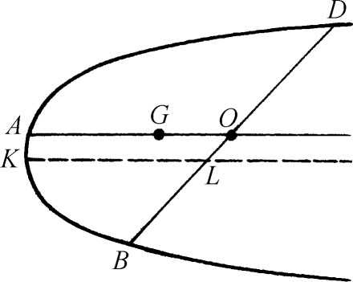
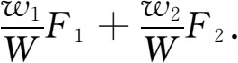
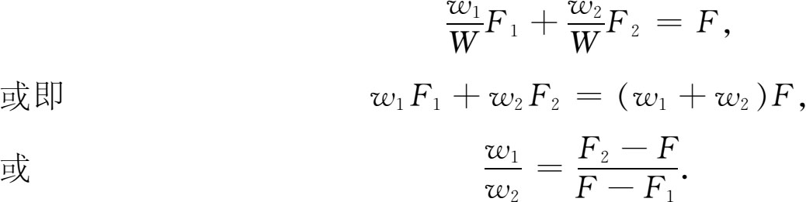
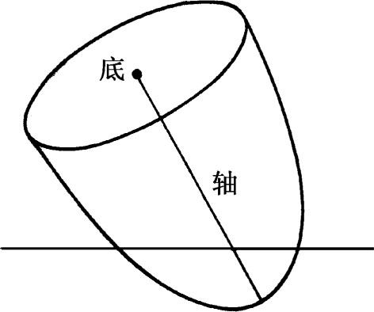

6．力学
希腊人开创了力学这门科学。亚里士多德在他的《物理学》（Physics）中编辑了一套运动的理论，成为希腊力学的最高成就。同他的全部物理学一样，他的力学是从一些理性的似乎是不言自明的原理出发讲述的，但这些原理仅仅得自观察或略经实验核证。
按亚里士多德的说法，运动有两类，一类是天然的，另一类是激发的或人为的。天体只有天然运动——圆周运动。至于地上的东西，他说它们能有天然运动（相对于把一物从一处投掷或拉曳到另一处的那种激发运动而言）乃是因为每件物体在宇宙中有其平衡于其他物体或获得静止的自然位置。重物以宇宙中心即地心为其自然位置。轻物（如气体）的自然位置在天上。当物体趋向它的自然位置时就引起天然运动。地上物体的天然运动是循直线上升或下落的。若地上一物不在它的天然位置上，它就要尽可能快地达到它的天然位置。激发运动（即人为运动）则是由圆周运动和直线运动组成的。例如把一块石子朝上直投，它就循直线往上并循直线下落。
运动中的任一物体都受到力和阻力。在天然运动的情况下，力就是物的重量，阻力则来自物运动所经过的媒质。在激发运动的情况下，力来自人的手或某种机构，阻力则来自物的重量。没有力就没有运动；没有阻力运动就会一下子完成。所以任何运动的速度取决于力和阻力。这些原理可以用现代写法总结成公式V∝F/R，即速度正比于力而反比于阻力。
因激发运动中的阻力来自物体的重量，故对较轻的物体而言，阻力R就较小。根据以上公式，运动速度V就会大一些；就是说，在同一力的作用下，较轻的物体运动得快一些。由于天然运动中的阻力来自媒质，所以在真空中的速度将为无穷大。因此真空是不可能有的。
亚里士多德对解释某些现象感到困难。为说明落体速度何以会增大，他说物体之所以随着其接近天然位置而增大其速度，乃是因为物体运动得更加欢乐；但这同速度取决于固定重量的说法不一致。对于弯弓射出一箭的情形，亚里士多德说箭之所以在离弓后能继续运动，乃是因为手或弓弦把动力传给附近的空气，而这附近的空气又把动力传给下一层空气等之故。另一方面，箭前的空气受压缩而奔绕到箭后以免发生空隙，因而使箭能推向前进。他没有解释为什么推动力会消衰。
希腊时代最大的数学物理学家是阿基米德。任何别的希腊学者都没有像他那样把几何与力学结合得如此紧密，并像他那样巧妙地善于用几何论点来作证明。他在力学方面写过《论平板的平衡》［或《平板的重心》（The Centers of Gravity of Planes）］，这是一部共含两篇的著作。他所说的一个物体或一组固连物体的重心，也同我们今天所说一样，是指能使该物体或该组物体在只有重力作用时支于该处而获得平衡的点。他开头提出关于杠杆和重心的一些公设，例如（次序编号仍按阿基米德）：
1．（离开杠杆支点）等距离处的相等重量处于平衡，不等距离处的相等重量不平衡而朝着距离较远处的那个重量倾斜。
2．若在（离开杠杆支点）某两个距离处的两个重量处于平衡，而在其中一重量上加一物，它们就不再平衡，朝着加物的那个重量倾斜。
5．面积不同而相似的图形，其重心也在相似的位置……
7．凡周边凹向同侧的任一图形，其重心必在图形内部。
他在这些公设之后列举了一些命题，其中有些证明要依据其失传著作《论杠杆》中的结果：
命题4．若两个相等重量的重心不在同一个地方，则它们合在一起时的重心乃是其重心连线的中点。
命题6与7．两个量，不管其可公度与否，其到平衡处的距离与该两量成反比。
命题10．任一平行四边形的重心是其对角线的交点。
命题14．任一三角形的重心，是其任两顶点与其对边中点所作两根连线的交点。
第二篇论述一抛物线弓形的重心。其主要的定理中有：
命题4．为一直线所割出的任一抛物线弓形的重心位于该弓形的直径上。
直径是AO（图7.8），这里O是BD的中点，而AO平行于抛物线的轴。证明要利用他在《抛物线的求积》一书中的结果。

图7.8
命题8．若AO是抛物线弓形的直径，G是它的重心，则AG＝（3/2）GO。
求重心的工作在亚历山大希腊时期的许多书里都有。例如赫伦的《力学》（Mechanica）和帕普斯的《数学汇编》的第八篇（第5章第7节）。
流体静力学（研究静止液体的液压）是阿基米德奠立的。在他的《论浮体》一书中，他论述了水施于浸入其中物体的压力，他提出两个公设。第一个是说液体任一部分施于液体的压力是朝下的。第二个公设说液体对置于其中一物的压力是沿着通过该物体重心的一根垂线朝上的。他在第一篇中证明的一些定理是：
命题2．任一静止液体的表面是中心在地心处的一个球的球面。
命题3．凡与等体积液体等重的固体，若置于液体内，必将浸没到使其表面不致露出液面，但不会浸得更深。
命题5．若将轻于液体的任一固体置于液体内，它将下沉到这样的程度，使该固体［在空气中］的重量等于其排开的液体的重量。
命题7．若将一重于液体之物置于液内，它将下沉到液底，且若在液体内衡其重量，则其轻于原重之数等于其所排液体的重量。
最后这个命题一般认为是阿基米德据以确定那个王冠成分的（第5章第3节）。他必定是照着下面这样来论证的：设W是王冠的重量。拿一块重量为W的纯金放在水里称，它就要减轻F1——所排去水的重量。同样，一块重量为W的纯银所排去水的重量F2可由纯银在水中称出重量后求得。于是若原来那个王冠含重w1的金和重w2的银，则原王冠所排去的水重应等于

今设F是王冠所排水的实际重量。则

于是阿基米德可以定出王冠里的金银含量之比而无需弄毁王冠。在维脱鲁维（又译“维特鲁威”，Vitruvius）讲的这个故事里，阿基米德是用所排水的体积而没有用重量。这时F，F1，F2分别是王冠，重量为W的纯金，重量为W的纯银所排去水的体积。代数演算的结果仍一样，但没有用到命题7。阿基米德确实找出金冠里掺了银。
为使读者对阿基米德著作中所处理的问题在数学上和物理上的复杂程度有些印象，我们摘录第二篇中一个简单的命题。
命题2．有一旋转抛物体的正截段，其轴不超过3p/4［p是其生成抛物线的正焦弦或主参量］，其比重小于液体。若将它浸入液体中使它的轴与垂直方向成任一角但不让截段的底接触水面（图7.9），则该抛物体截段不会停留在那个位置而要回复到使它的轴处于垂直方向的位置。

图7.9
阿基米德所处理的是物体在水里的稳定性问题。他说明物体放到水里后在什么条件下能转向或保持平衡位置。这些问题显然是对船舶在水里受倾侧后所出现情况的理想化描述。